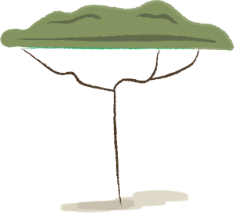
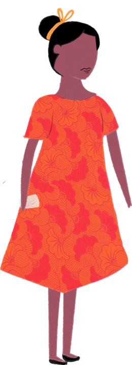
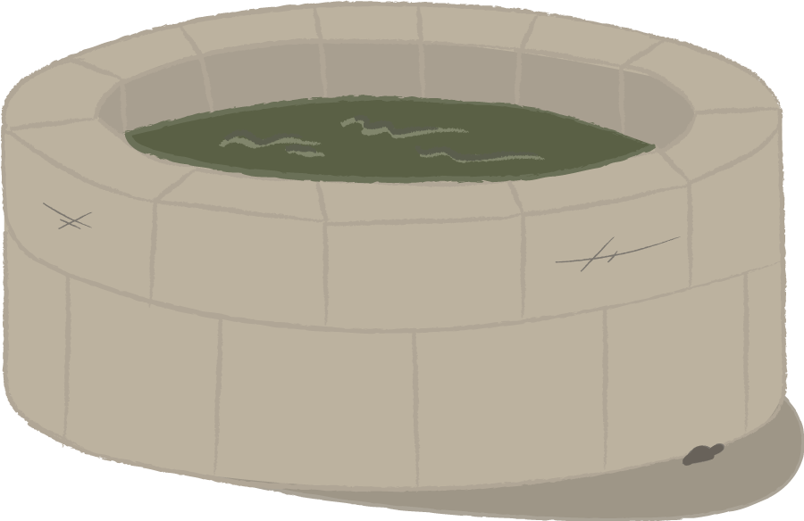
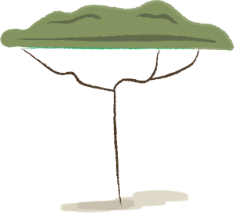
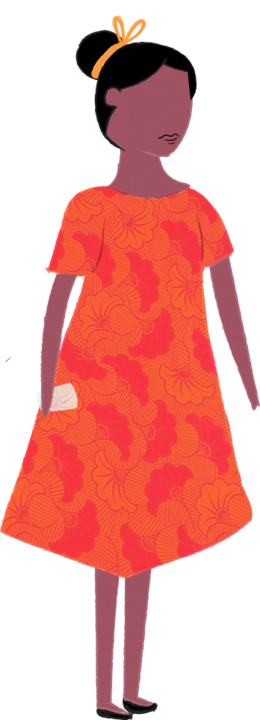
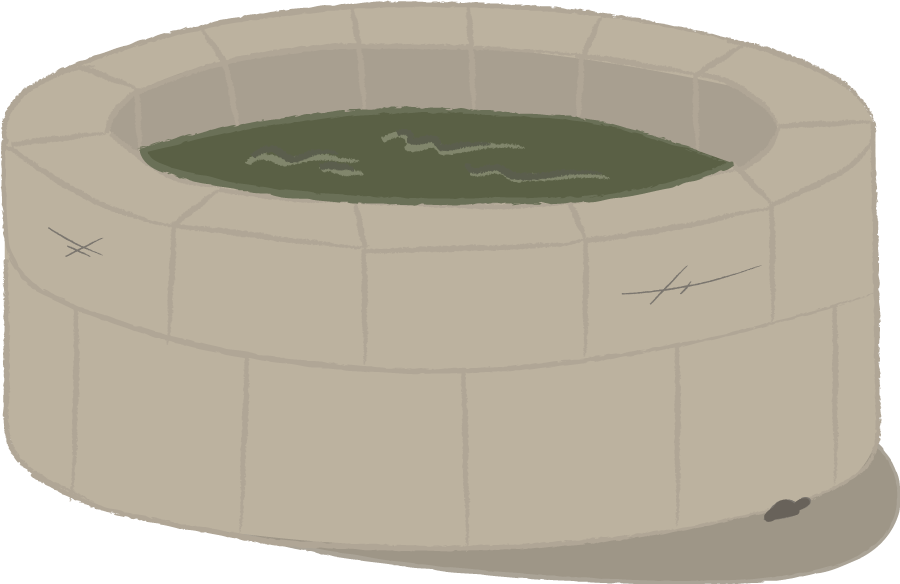
 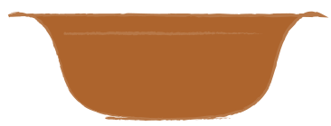
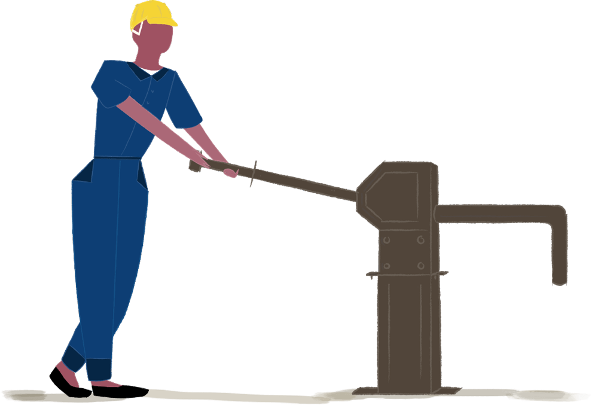
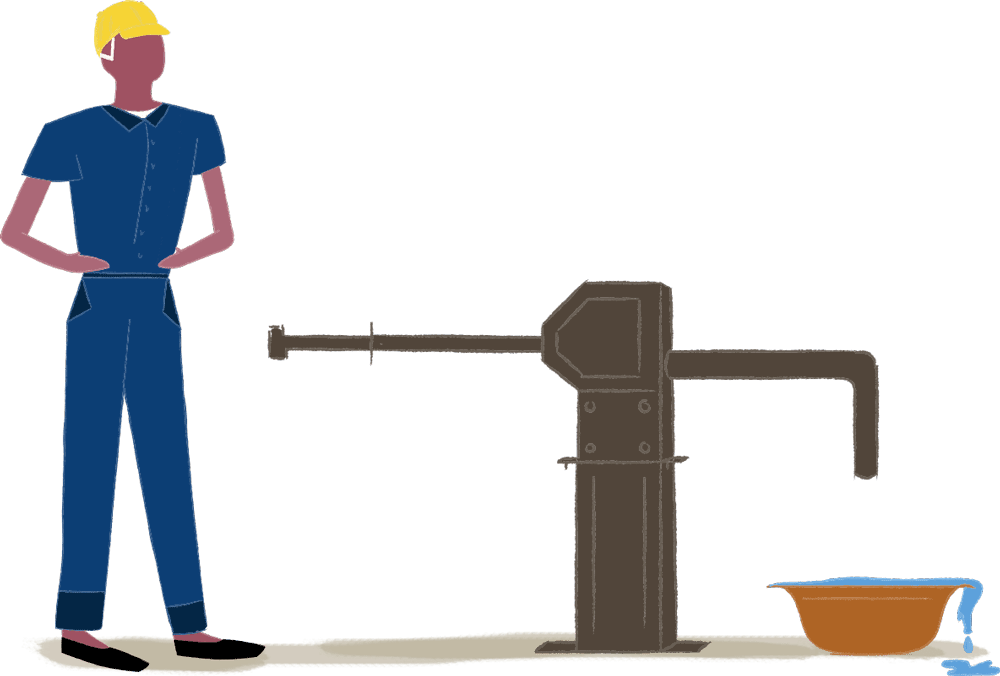
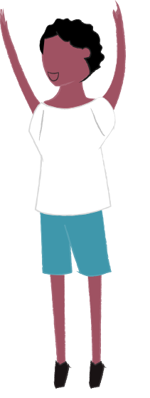
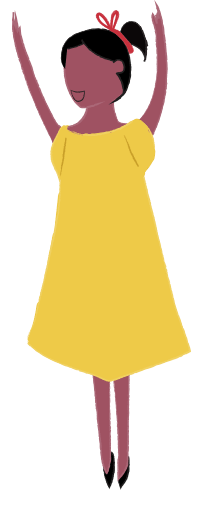
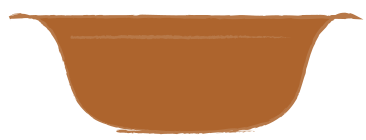
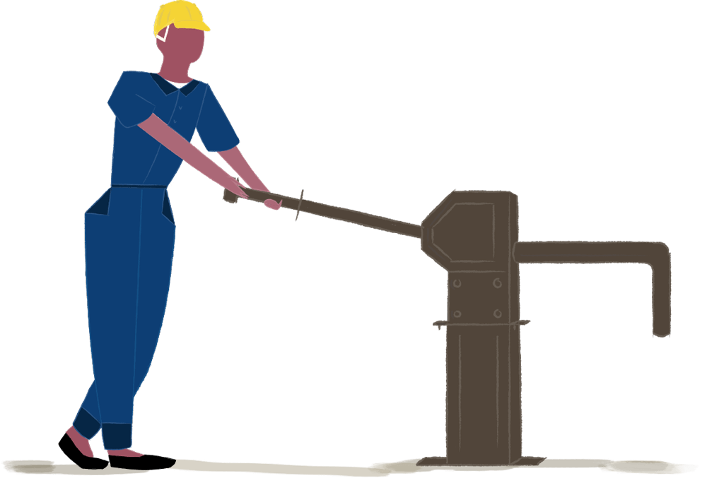
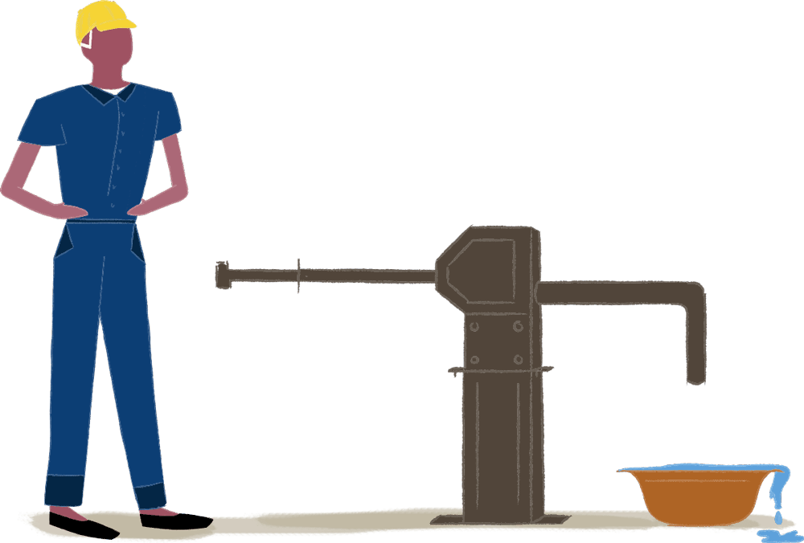
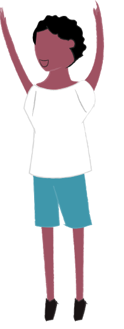
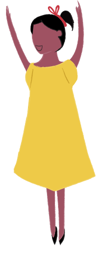
Approvisionnement en eau potable Douala- PK11 (Cameroun)
Selon l’Organisation Mondiale de la Santé plus de 60% de la population africaine n’a pas accès à l’eau potable. Pour notre premier projet, nous voulons implanter deux pompes à eau dans une localité au Cameroun, où le besoin est particulièrement préoccupant. En effet, dans la commune de Douala – PK11, quartier de Douala, composé environ de de 5000 habitants, 80% des habitants ne sont pas connectés au réseau de distribution d’eau potable. Pour couvrir leur besoin en eau, certains habitants n’ont pas d’autre choix que de se ravitailler auprès de sources d’eau impropres à la consommation. C’est la source de plusieurs maladies hydriques rencontrées localement telles que la dysenterie amibienne, le choléra, la typhoïde etc.
Le projet d’approvisionnement en eau potable permettra :
- aux habitants de vivre dans de meilleures conditions en réduisant les risques d’apparition et de propagation de maladies d’origine hydrique.
- aux jeunes enfants, sur qui repose la tâche de la collecte de l’eau, de consacrer plus de temps à leurs études.
- aux femmes de pouvoir mener une activité économique (vente de denrées alimentaires).